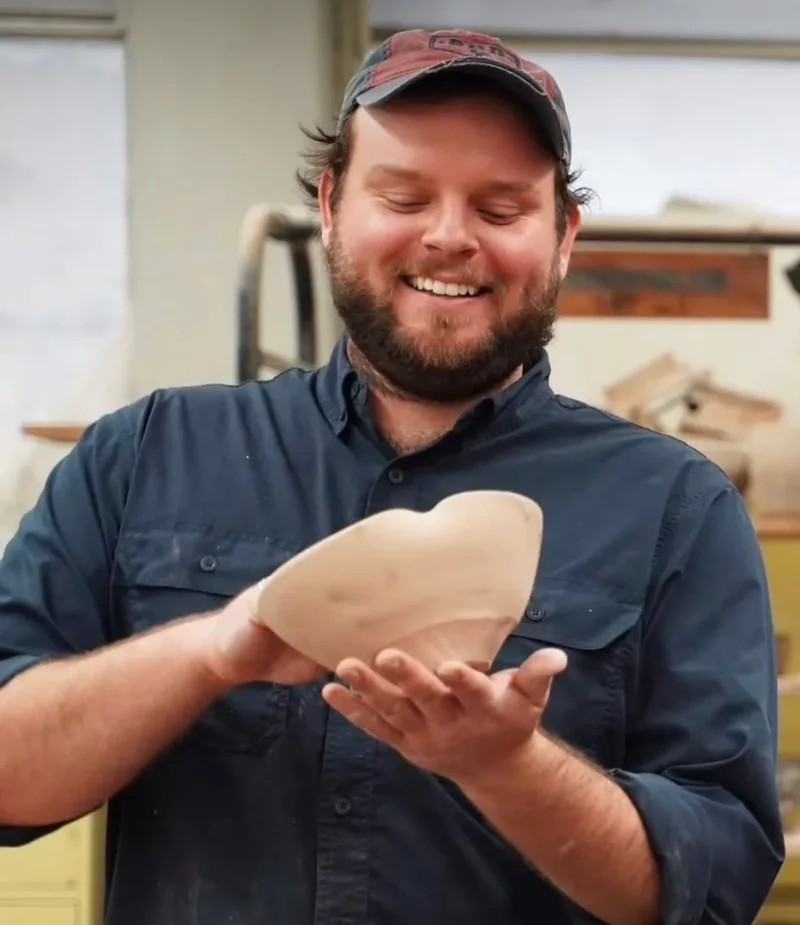
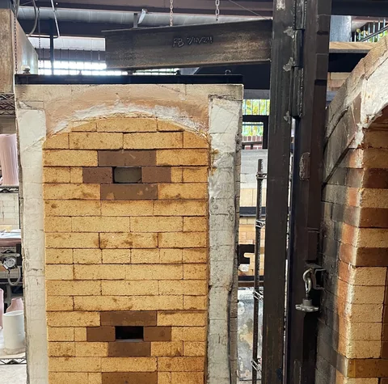

Educator · Studio potter
Ray Brown Ceramics
Utilitarian pottery shaped for a slower encounter — confident line, pressurized volume, and surface that invites the hand.
Artist statement
Soft, inviting, generous, playful, and strong — forms that feel as if they are inhaling.
I make pottery and vessels with the intent to provide the user with an entrance into a memorable and contemplative experience. Crafting works that are soft, inviting, generous, playful, and strong, I intend for the user to leave with a sense of thoughtfulness and curiosity. I wish to achieve cohesive forms that capture a confidence of line, with supporting crisp and energetic surface decoration. Both in surface and form, I strive for a captured, pressurized volume within my work, as if they are inhaling.
Furthermore, I am interested in translating curvilinear patterns and line work into three-dimensional forms, extensions and parts inspired by architecture and streamlining era design. By exploring these iterations, I create forms that are grouped into assemblages focusing on contrast, dynamic profiles and buoyant, intersecting volumes. Through traditional techniques, digital processes, and a sculptural mindset, I accumulate an aggregate of information in the form of proportion, line, color and texture. Each layer serves as an anchor point for the next, orbiting and celebrating the elements below. Overall, through playing with proportions, surface, and color I hope to create a tactile and visual experience that prompts the user to slow down.
Demos, kiln openings and work in progress from my ceramics studio at Ole Miss.
reels
Fresh from the kiln
Recent pieces as posted — tap one to open it on Instagram.


About
Ray Brown
I was born in Houston, Texas, and earned a BFA with Honors from the Sally McDonnell Barksdale Honors College at the University of Mississippi under Matt Long. During summers, I assisted ceramic artists Chris Gustin in Dartmouth, Massachusetts, and Christopher Spitzmiller in New York City.
I then earned an MFA in Studio Art with an emphasis in Ceramics at West Virginia University (WVU), learning under Shoji Satake, Robert “Boomer” Moore, Jen Allen, and Shalya Marsh. I assisted Julia Galloway in Missoula, Montana, and helped build a large tube wood kiln on the WVU campus.
My work has been shown nationally and internationally in numerous juried shows, including in Jingdezhen, China, and Tokyo, Japan. In 2019, I received the Studio Potter Merit Award at NCECA’s National Juried Student Exhibition in Minneapolis, MN, and my work was featured in Studio Potter as part of the award. In 2024, I was selected as one of Ceramics Monthly’s Emerging Artists. I currently serve as an instructor and ceramic studio technician at the University of Mississippi.
Teaching
Work from my students
I teach beginning, intermediate, and handbuilding ceramics at the University of Mississippi. Here’s work from my students — not my own studio pieces.
Highlights
Shows, awards & teaching
- NowInstructor & Ceramic Studio Technician, University of Mississippi
- 2026Best Pouring Vessel — Companion Gallery
- 2026Workshop: Thrown & Altered — Sugar Maples Center for Creative Arts
- 2025Solo exhibition — Companion Gallery
- 202511th Kikuchi Biennale — Tokyo, Japan
- 2025Juror’s Choice — Morningware, Saratoga Clay Arts
- 2025Workshops — Touchstone Center for Crafts; Lighthouse Art Center
- 2024Ceramics Monthly Emerging Artist
- 2019Studio Potter Merit Award, NCECA National Juried Student Exhibition
- MFAStudio Art, Ceramics — West Virginia University
- BFAArt with Honors — University of Mississippi
Contact
Say hello.
Available work, commissions, workshops, and exhibition opportunities — all welcome.
rlbrowni@olemiss.edu